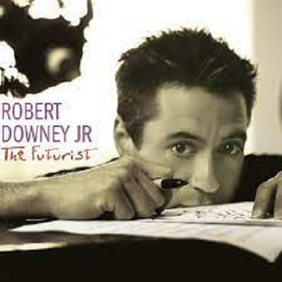

Música
Artista
Filme
Música
Música
Artista
Filme
Música

The Futurist/Robert Downey Jr
Sim, pode parecer muito louco, mas sim Robert tem um álbum de música própria. The Futurist foi lançado um ano depois do cantor ficar definitivamente sóbrio e tem um estilo que mistura jazz com pop. O ator descreveu o disco como um: “pop erudito com o jazz e influências clássicas”.
Faixas
- Man Like Me
- Broken
- Kimberly Glide
- The Futurist
- Little Clownz
- 5:30
- your Move/
- Give Peace A
- Chance Medley
- Details
- Hannah
- Smile
- Total Time
Você pode escutar esse álbum por essa plataforma:
contato:mom2@aluno.ifnmg.br